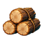
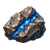

REGIÃO NATAL · FRONTEIRA DE ASHEN
Guilda da Aurora
Último plano: duas atividades de coleta e um contrato em andamento.
IDENTIDADE DA CAMPANHA
O nome da guilda identifica a campanha; a região natal aparece logo abaixo.
SELEÇÃO LOCAL
O modo offline devolve o jogador a esta tela; trocar de campanha não fecha o aplicativo.
REGIÃO NATAL · FRONTEIRA DE ASHEN
Último plano: duas atividades de coleta e um contrato em andamento.
Região natal: Colinas de Bruma. Última abertura: Vigília 02.
Na criação, pedir apenas o nome da guilda. A região natal é sorteada pelo jogo.
UM MERCENÁRIO POR FONTE
Trabalho atribuído avança online e, quando iniciado pelo comando, também no período offline elegível.

 POSTO DE TRABALHO
POSTO DE TRABALHOMadeira, minério e couro competem pelo tempo dos mercenários. Cada pessoa designada fica ocupada.
1.246 de 1.500 unidades acumuláveis. Equipamentos únicos, ouro e cristal especial ficam fora desta capacidade.

Lyra Ventoverde · próxima unidade em 00:41 · estimativa 60/h

Bren da Muralha · próxima unidade em 00:12 · estimativa 60/h
Designe uma pessoa livre; duração, bônus e previsão aparecem antes de confirmar. O teste altera apenas esta prévia.
ESTADO DE LIMITE
A atividade pausa, mas o trabalhador permanece ocupado até o jogador gerenciar a designação.
Bren continua designado. Ciclos já registrados não são apagados; a produção retoma quando houver espaço.